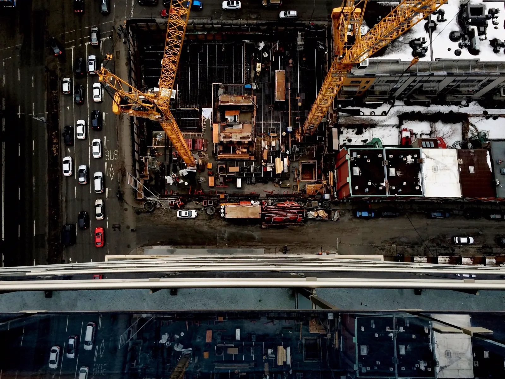

Oldalak
Főoldal Mit építünk Foghíjbeépítés Műemlék és homlokzat Hogyan építünk Referenciák Számok Rólunk KapcsolatElérhetőség
+36 70 403 7217Főoldal/Számok
A magyar felszámolások nagyjából negyede építőipari cég. Ezért a beruházó első kérdése nem az, hogy szépet építünk-e, hanem az, hogy ott állunk-e a második év végén is. Erre az oldalra azt tettük ki, amit egy átvilágítás úgyis megkeres, a forrás megjelölésével.
A mérleg
A kamarai kötelező minimum kétszerese. Minden szerződés mögött ez áll, a projekt méretétől függetlenül.
Építés- és szerelésbiztosítás. A projektek külön kötvényen futnak, nem egy közös keretet fogyasztanak.
Egyetlen beruházásra szóló fedezet, projektenként külön kötvényen.
A C.A.R. kereten belül futó további projektkötések, kötvényenként.
A számok mögötti kötvénymásolatot, a cégkivonatot és az igazolásokat egyeztetés előtt is elküldjük, aláírt titoktartás nélkül. Ezek az adatok amúgy is nyilvánosak.
01 / Fedezet
Ha az építkezésen kár keletkezik, két dolog dönt: van-e mögötte kötvény, és elég nagy-e. Az alábbi sorok mindegyikét kötvénymásolattal igazoljuk.
| Tétel | Érték | Hol ellenőrizhető |
|---|---|---|
| Kivitelezői felelősségbiztosítás | 100 000 000 Ft | MKIK kivitelezői nyilvántartás |
| Ebből kamarai kötelező minimum | 50 000 000 Ft | 191/2009. Korm. rendelet |
| C.A.R. építés- és szerelésbiztosítási keret | ~2 000 000 000 Ft | Generali, kötvényenként |
| Legnagyobb egyedi projektkötés | 900 000 000 Ft | kötvénymásolat kérésre |
| További élő projektkötések | 750 / 450 M Ft | kötvénymásolat kérésre |
02 / Cégadat
Amit a cégkivonat mutat, karakterre ugyanúgy. Azért így, hogy a két oldal összevethető legyen, és ne kelljen kitalálni, melyik a hivatalos alak.
| Adat | Érték | Forrás |
|---|---|---|
| Cégnév | VAC-Team Építő Zrt. | cégnyilvántartás |
| Teljes név | VAC-Team Építő Zártkörűen Működő Részvénytársaság | cégkivonat |
| Cégjegyzékszám | 13-10-042476 | cégnyilvántartás |
| Adószám | 14658022-2-13 | NAV törzsadat |
| Székhely | 2161 Csomád, Kossuth Lajos út 79. | cégkivonat |
| Működési terület | Budapest és agglomeráció | saját nyilatkozat |
| Vezérigazgató | Antal-Köz Csaba | cégkivonat |
| Alapítás | 2009 | cégkivonat |
| Építőipari profil | 2023-tól | tulajdonosváltás |
Megjegyzés a cégtörténethez
Egy dolgot érdemes előre kimondani. A társaságot 2009-ben jegyezték be, az építőipari profil viszont a 2023-as tulajdonosváltással jött. A cégkivonat így néz ki, és aki lekéri, ezt fogja látni.
A referenciamunkák mögötti mintegy huszonnégy évnyi szakmai múlt a vezetők személyéhez és korábbi cégeikhez kötődik, nem ehhez a cégjegyzékszámhoz. Ezért nem írunk hosszú építőipari cégmúltat oda, ahol az adat mást mond. A kettőt az ügyvezetés önéletrajza köti össze, azt kérésre névre szólóan átadjuk.
03 / Ellenőrzés
Öt nyilvántartás, mind nyilvános, egyikhez sem kell tőlünk semmi. Ha ellentmondást talál bármelyikben, kérjük, hívjon fel, mielőtt továbblép.
A nyilvántartások egymástól függetlenül vezetettek, és nem tőlünk kapják az adatot. Pont ez bennük az érték.
04 / Biztosíték
A biztosíték nem bizalmi kérdés, hanem szerződéses tétel. Bankgaranciát adunk vagy visszatartást fogadunk el, nem ígéretet. Banki finanszírozásnál a hitelező elvárásaihoz igazítjuk az arányokat és a formát.
Összeállítás alatt
A részletes adatokat a következő frissítéssel tesszük közzé. Addig is keressen minket nyugodtan telefonon vagy az űrlapon.
Amit nem vállalunk
Nem adunk fix árat két évre a kulcsátadásig. A forint és az euró viszonyát ennyi időre nem lehet becsületesen beárazni, és az ilyen ár vagy a beruházón, vagy az alvállalkozói láncon csattan. Ezért a szerkezetkész, vízhatlan épületig megyünk fix áron, a második ütemre pedig a tényleges piaci árakon adunk ajánlatot.

Iratok és egyeztetés
Cégkivonat, kötvénymásolat, felelős műszaki vezetői jogosultság, referencialista. Egy levélben, két munkanapon belül, még az első találkozó előtt.